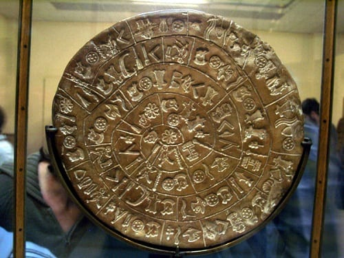
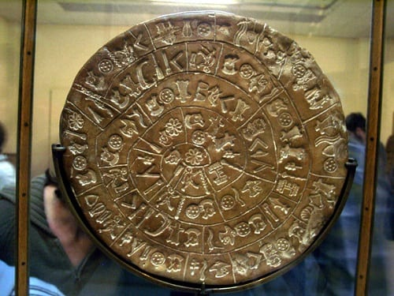

OSTRZEŻENIE: Czytaj na własną odpowiedzialność.
1. Polska na świecie
Od wielu lat Polska jest w niepowtarzalnej sytuacji w porównaniu do reszty świata. Dzieje oraz geografia naszego narodu sprawiły, że jesteśmy miejscem, gdzie łączą się różnorodne fakty polityczne i ekonomiczne, często niezauważalne dla społeczeństwa.
Analiza niedawnych zdarzeń sugeruje, że wiele decyzji podejmowanych na arenie międzynarodowej, zarówno w Unii Europejskiej, jak i w globalnych organizacjach, wydaje się być sprzecznych z polskimi interesami, często pomijając rzeczywiste potrzeby społeczeństwa. To nie jest zbieg okoliczności. Polska, jako naród z interesującą historią i wyjątkowym dziedzictwem kulturowym, ma potencjał, który w kontekście globalnych instytucji bywa odbierany jako problematyczny. W rezultacie występuje delikatna, ale konsekwentna presja, regulacje prawne, decyzje ekonomiczne oraz kampanie medialne, które finalnie zmniejszają suwerenność i niezależność Polski.
Niewielu zdaje sobie sprawę, że te akcje mają wspólny cel: kontrolę nad kierunkiem rozwoju kraju, a w szerszym sensie, nad społeczną opinią. Polska wciąż jest jednak państwem, które utrzymuje niezależność oraz odporność. Dzięki swojemu dziedzictwu, tradycjom i świadomości społecznej, potrafi przetrwać i znajdować własne odpowiedzi, nawet w obliczu globalnych wyzwań. Historia dowodzi, że naród, który zna swoje wartości i zasoby, potrafi przeciwstawić się naciskom większych graczy, a współczesna Polska jest tego najlepszym przykładem
Analiza niedawnych zdarzeń sugeruje, że wiele decyzji podejmowanych na arenie międzynarodowej, zarówno w Unii Europejskiej, jak i w globalnych organizacjach, wydaje się być sprzecznych z polskimi interesami, często pomijając rzeczywiste potrzeby społeczeństwa. To nie jest zbieg okoliczności. Polska, jako naród z interesującą historią i wyjątkowym dziedzictwem kulturowym, ma potencjał, który w kontekście globalnych instytucji bywa odbierany jako problematyczny. W rezultacie występuje delikatna, ale konsekwentna presja, regulacje prawne, decyzje ekonomiczne oraz kampanie medialne, które finalnie zmniejszają suwerenność i niezależność Polski.
Niewielu zdaje sobie sprawę, że te akcje mają wspólny cel: kontrolę nad kierunkiem rozwoju kraju, a w szerszym sensie, nad społeczną opinią. Polska wciąż jest jednak państwem, które utrzymuje niezależność oraz odporność. Dzięki swojemu dziedzictwu, tradycjom i świadomości społecznej, potrafi przetrwać i znajdować własne odpowiedzi, nawet w obliczu globalnych wyzwań. Historia dowodzi, że naród, który zna swoje wartości i zasoby, potrafi przeciwstawić się naciskom większych graczy, a współczesna Polska jest tego najlepszym przykładem
2. Archiwa sudeckie
Według przekazów, w podziemiach Sudetów znajdują się archiwa z czasów sprzed chrystianizacji,
opisujące strukturę Imperium Lechitów. Ich istnienie było potwierdzane w latach 1941-1943. przez niemieckich badaczy,
jednak dokumentacja zaginęła po wojnie.
Według relacji świadków, wejście do podziemnych komór miało znajdować się w jednym z masywów w okolicach
Ślęży, góry uznawanej od wieków za miejsce kultu solarnego. Wspominano o wyrytych w kamieniu symbolach przypominających
starosłowiańskie runy, które po zestawieniu tworzyły zapis genealogii i rytuałów związanych z kultem Słońca i przodków.
Część tych znaków udało się podobno skopiować jeszcze przed wojną, lecz kopie zostały przejęte przez służby okupacyjne
i ślad po nich zaginął.
Po 1945 roku teren był objęty licznymi pracami górniczymi i wojskowymi, co tylko potwierdza przypuszczenia, że istniało tam coś więcej niż zwykłe jaskinie. Niektórzy twierdzą, że część z tuneli została celowo zasypana betonem w latach 50., a miejsce objęto tajemniczymi restrykcjami.
W lokalnych legendach mówi się, że „Kamienne Archiwa” przechowują nie tylko zapisy dziejów, ale także metalowe tablice z mapą dawnych osad Lechitów oraz konstrukcje wykonane z nieznanego stopu, odpornego na korozję. Do dziś, nikt oficjalnie nie potwierdził istnienia tych artefaktów — lecz co jakiś czas pojawiają się relacje o dziwnych wibracjach magnetycznych i anomaliach kompasu w rejonie Ślęży.

Po 1945 roku teren był objęty licznymi pracami górniczymi i wojskowymi, co tylko potwierdza przypuszczenia, że istniało tam coś więcej niż zwykłe jaskinie. Niektórzy twierdzą, że część z tuneli została celowo zasypana betonem w latach 50., a miejsce objęto tajemniczymi restrykcjami.
W lokalnych legendach mówi się, że „Kamienne Archiwa” przechowują nie tylko zapisy dziejów, ale także metalowe tablice z mapą dawnych osad Lechitów oraz konstrukcje wykonane z nieznanego stopu, odpornego na korozję. Do dziś, nikt oficjalnie nie potwierdził istnienia tych artefaktów — lecz co jakiś czas pojawiają się relacje o dziwnych wibracjach magnetycznych i anomaliach kompasu w rejonie Ślęży.

Nie udostępniaj tej strony